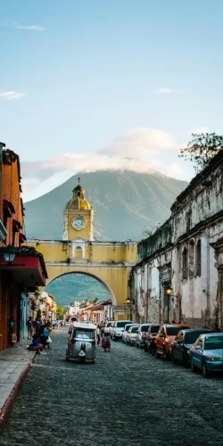

Data
Area: 108,888 sq km
Population: 18,125,000
Capital: Guatemala City
Languages: Spanish, 22 Mayan languages
Currency: Guatemalan Quetzal
Time Zone: UTC-6
Calling Code: +502
Internet TLD: .gt
Weather
Temperature: 20 °C
Conditions: Partly Cloudy
Wind: 8 km/h
Wind Chill: N/A